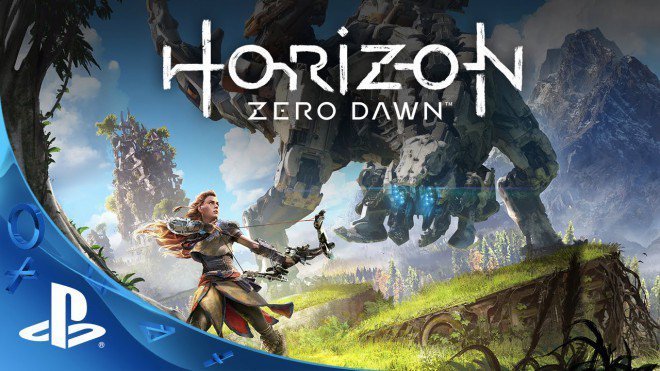
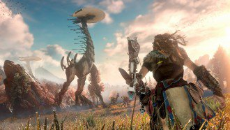
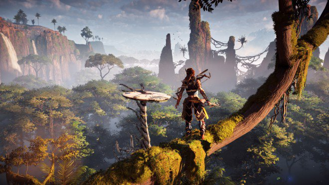
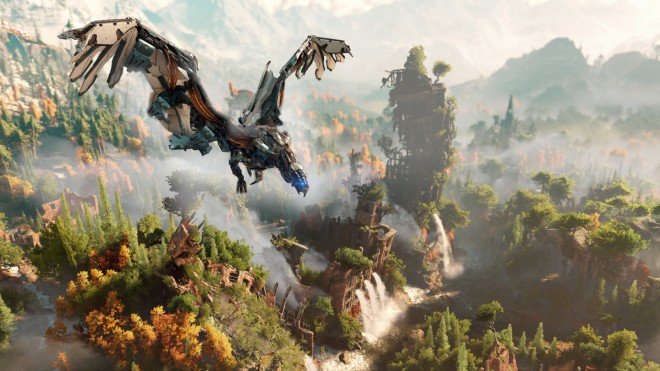
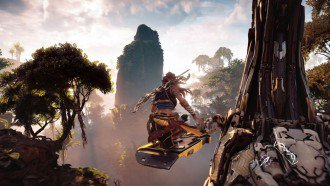
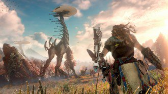
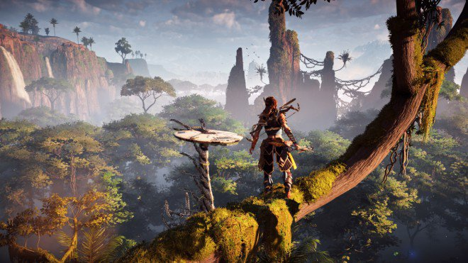
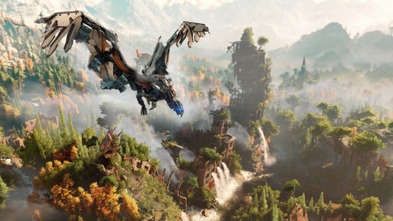
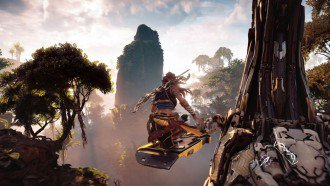

Prima di andare a narravi l'incipit di Horizon: Zero Dawn, senza fare spoiler ovviamente, è necessario spostare l'attenzione sulla società presente nel gioco. L'avventura è ambientata in un futuro post-apocalittico dove gli umani vivono praticamente in tribù primitive. La caccia è la fonte primaria di sostentamento, come del resto i frutti dati dalla natura. Gli essere viventi devono però convivere con le Macchine, misteriose creature di cui non è possibile conoscerne l'origine e soprattutto molto pericolose.
L'incognito va classicamente di pari passo con la religione. Quando nasce un bambino è necessario compiere un rituale, sperando che la Dea ripeta il nome dell'infante. La storia di Aloy inizia proprio da questo punto. L'emarginato dalla società Rost porta la piccola orfana sul luogo in cui lui stesso dovrà chiamare il nome della bambina a gran voce, consapevole che la sua posizione sociale non richiamerà alcuna attenzione dalle Matriarche. A sorpresa appare però l'Alta Matriarca Tersa, la quale compie la benedizione seppur una seconda Alta Matriarca mostri tutto il suo sdegno.
Passano sei anni e Aloy è ovviamente una bambina. La piccola capisce il suo rango di reietto a causa di una donna adulta che blocca ogni interazione tra la bambina e un gruppo di ragazzini presumibilmente della stessa età di Aloy, ricordando che è un'emarginata. La tristezza e la disperazione portano la protagonista a fuggire disperata, e soprattutto iniziare il tutorial di Horizon: Zero Dawn. Aloy cade in un'enorme buca e si trova all'interno delle rovine della civiltà precedente. Cercando una via di uscita trova il Focus, auricolare in grado di effettuare uno scan dell'ambiente circostante e rivelare ogni singolo dettaglio legato a oggetti, esseri viventi e addirittura visualizzare il passato.
Il Focus porta Aloy non solo a salvare la pelle, ma a saper osservare qualsiasi cosa accada attorno a lei. Stanca delle angherie psicologiche subite per la sua etichetta sociale, Aloy scopre da Rost che è possibile risolvere la situazione superando la prova degli Audaci, ma al contempo sarà necessario addestrarsi per molti anni, data la durezza del test stesso.
Senza cadere in spoiler di sorta, la voglia di riscatto di Aloy porterà la giovane in un lungo viaggio attraverso una serie di location completamente diverse. Il test degli Audaci fungerà da vera e propria molla, la quale costringerà Aloy a crescere in fretta e affinare le proprie abilità. Il mondo esterno è infatti pericoloso, sia per quanto riguarda la presenza delle Macchine che di tribù non sempre amichevoli. Perchè Aloy è una "senzamadre"? Per quale motivo Rost era un emarginato? E soprattutto, cosa sono le macchine? Le risposte a queste domande, e ad altre che non riportiamo a causa dell'altissimo rischio di anticipazioni, verranno date durante l'arco dell'avventura, la quale vi accompagnerà per almeno trenta ore, senza però tenere conto dei compiti aggiuntivi che vi verranno assegnati.
Il contesto narrativo porterà il giocatore ad affezionarsi ad Aloy grazie alla sua posizione sociale e soprattutto quella voglia di riscatto. Durante il proprio cammino, Aloy farà la conoscenza di diversi personaggi, i quali dispongono di un background ben delineato, in grado di colpire l'animo dell'utente stesso. I personaggi principali godono di un'ottima caratterizzazione e riescono sempre a trovare posto in un contesto socio-politico molto particolare, che lascia comunque spazio a sentimenti come l'amicizia e l'amore. La guerra e la sopravvivenza sono le tematiche principe, come del resto il terrore di essere spazzati via dalle Macchine, sentimenti condivisi in maniera convincente, seppur il pericolo si trovi anche tra le tribù stesse.

GAMEPLAY
Horizon: Zero Dawn è un action RPG in terza persona, in perfetto stile The Witcher 3: Wild Hunt. In apertura abbiamo citato anche Tomb Raider e Assassin's Creed, titoli action però in grado di contenere elementi richiamati magistralmente nella produzione di Guerrilla Games. Essendo un open-world, Aloy sarà chiamata a macinare chilometri e chilometri, in modo da esplorare ogni singolo dettaglio della gigantesca mappa a disposizione. Durante il proprio viaggio Aloy imparerà soprattutto a sopravvivere grazie alle Risorse naturali a disposizione, le quali andranno da bacche, fiori, pelli di animali, pezzi di legno a elementi più tecnologici come microchip, parti elettroniche e molto altro ancora. Sopravvivere nel mondo di Horizon: Zero Dawn significa fare attenzione alla fauna predominante. Le Macchine sono per la maggior parte dei predatori che fanno a pezzi qualsiasi essere umano passi al loro fianco, il tutto però a seconda della tipologia stessa. Se le Sentinelle non vedono l'ora di farci fuori, i Cervaviti, se spaventati, fuggono a gambe levate. L'agilità dell'eroina verrà messa in risalto grazie a momenti in perfetto stile Tomb Raider. La rossa guerriera si troverà a scalare pareti rocciose, allo scopo di raggiungere determinati punti elevati e continuare così la missione stessa. Le situazioni al limite sono effettivamente numerose, ma la fase di scalata non risulta assolutamente complicata da gestire: basterà di fatto direzionare la protagonista e tenere premuto lo stick sinistro e, in determinati casi, accompagnare il tutto con il tasto dedicato al salto. Apriamo una piccola parentesi dedicata al Focus, dispositivo che trova Aloy all'età di sei anni e che le permette di avere una visione del mondo diversa dal resto dei componenti delle varie tribù. Il dispositivo può essere paragonato al Profiler di Watch Dogs dato che è in grado di suggerire ad Aloy come risolvere determinati enigmi, ascoltare registrazioni e soprattutto visualizzare le orme di Macchine e persone, in modo da prevederne il pattern. Durante l'avventura capiterà di dover indagare su determinate situazioni, risolvibili grazie al Focus. Ma non solo. Lo speciale Device è in grado di dire se il personaggio presente sullo schermo è ostile o alleato, rivela i punti deboli delle Macchine e altre azioni che scoprirete avanzando nel gioco. La forte componente stealth viene quindi in favore del giocatore. Sfruttando l'erba alta è possibile eliminare velocemente le macchine più piccole con un sol colpo. La classica kill nell'ombra risulta particolarmente efficace, di conseguenza utilizzare un sasso per attirare l'attenzione di Corsieri, Vedette, Sentinelle et similia e sferrare un attacco mortale è quindi la manovra meno pericolosa per portare a casa la pelle, soprattutto durante le prime ore di gioco, durante le quali la sensazione di smarrimento sarà sicuramente forte a causa della totale non conoscenza del territorio e soprattutto del metodo migliore per approcciare una battaglia. Il Focus corre comunque in aiuto di Aloy in diverse situazioni. Come anticipato sopra, la ragazza può esaminare ogni elemento e soprattutto sottolineare la presenza di eventuali punti deboli degli avversari, aspetto da sfruttare a proprio vantaggio se si vuole portare a casa la pelle. Durante le prime ore, e soprattutto le prime morti, opterete per la fuga a gambe levate o l'utilizzo delle kill nell'ombra, concezione che verrà completamente ribaltata quando prenderete confidenza con l'equipaggiamento disponibile. Inizialmente Aloy disporrà di un arco da caccia, il quale potrà scoccare frecce normali o infuocate. Come in ogni action RPG che si rispetti, con l'avanzare del tempo acquisterete armi molto particolari. La trama vi porterà a sfruttare fin da subito il Lancia-Trappole, strumento che permette di stendere un cavo sul percorso del cattivo di turno, in modo da non solamente farlo inciampare, ma anche di aggiungere un effetto elementale, a seconda dal materiale scelto, i quali vanno dallo stordimento, alle esplosioni e congelamenti vari. E' possibile comunque acquistare altre armi, le quali vanno dal Lanciacorde, in grado di sparare cavi in modo da bloccare a terra il nemico e infliggergli un paio di colpi critici, oppure fionde, archi da guerra, archi di precisione, trappole et similia. E' bene sottolineare che ogni arma può sfruttare solamente determinati proiettili. L'arco da Caccia Carja ad esempio potrà sferrare munizioni normali o di fuoco mentre l'Arco da Guerra Carja potrà sparare cariche congelanti o stordenti. Durante la nostra avventura abbiamo sfruttato moltissimo il Lanciacorde in combinazione con le frecce esplosive, almeno contro le Macchine. Gli avversari umani invece li abbiamo abbattuti a suon di frecce normali. In verità ci siamo divertiti anche a far combattere tra loro i robotici cattivi grazie alla funzione Override. Durante le prime ore di gioco Aloy raccoglierà un dispositivo e lo monterà sulla propria lancia. Durante l'approccio stealth si potrà utilizzare l'Override in modo da riprogrammare la bestia e trasformarla in un essere mansueto al nostro soldo. Ovviamente non potremo fin da subito controllare bestioni giganteschi come Corruttori, Spezzaroccia e altri, ma sarà necessario scalare i cinque livelli dell'Override per disporre del massimo controllo. Per far tutto ciò è necessario affrontare delle speciali missioni, chiamate Calderone, di cui ci occuperemo poco sotto. Il combat system permette anche l'utilizzo di una lancia, utilizzabile per scontri a corto raggio. La soluzione non ci ha assolutamente convinto data l'assenza della funzione di lock del nemico, quindi non aspettatevi assolutamente scontri in stile Dark Souls data inoltre la bassa resistenza di Aloy alle armi dei nemici e soprattutto ai colpi delle Macchine. Vi accorgerete fin da subito che Horizon: Zero Dawn premia gli scontri dalla distanza e l'approccio stealth. Avanzare a testa bassa verso un nemico significa quasi certamente perdere la vita. La soluzione non è immediata. Destreggiarsi nei combattimenti significa mantenere la calma e pensare a ogni mossa da effettuare. Aloy può inoltre contare su una manovra evasiva, la rotolata, la quale funziona in maniera egregia e permette di togliersi dai guai in diverse situazioni. Non può certo mancare il sistema di cura, il quale va dalla creazione di speciali pozioni energetiche al cibarsi di risorse naturali raccolte in precedenza, le quali finiscono in un apposita bisaccia.  Aloy non può trasportare oggetti infiniti. L'inventario è abbastanza ampio e suddiviso per genere, ma avanzando nella storia sarà necessario aumentare la capacità delle diverse sacche a disposizione. Il sistema di Crafting permette di creare munizioni, trappole e di avere un numero maggiore di slot a disposizione. Al contempo ogni arma e abito può essere potenziato tramite l'utilizzo di speciali bobine raccolte in precedenza. Ottima la funzione dedicata alla creazione di proiettili in game. Tenendo premuto L1 è possibile visualizzare la ruota delle armi selezionabili con tanto di rallentamento del tempo. Con un paio di rapidi tocchi è possibile creare numerose frecce, corde, cavi e altro, e renderle subito disponibili nel proprio inventario. Questa meccanica risulta particolarmente importante da padroneggiare dato che capita sovente di trovarsi in mezzo a battaglie destinate a durare qualche minuto, soprattutto se vengono allertati più nemici. Come facilmente prevedibile, anche Aloy stessa può essere potenziata. Il sistema di crescita si basa sulla raccolta di punti esperienza, i quali vanno poi a scandire i Punti Abilità a disposizione. Nell'apposito menu è quindi possibile scegliere gli skill da applicare, i quali vengono suddivisi in tre macro fasce, denominate: Predatrice, Audace e Raccoglitore. Il primo determina le abilità stealth della protagonista, il secondo dona diversi boost nelle fasi di combattimento mentre il terzo ottimizza l'utilizzo delle risorse. Gli oggetti raccolti dai cadaveri di persone e macchine vengono utilizzate sia per il crafting sia per effettuare acquisti. In Horizon: Zero Dawn la moneta corrente sono i Frammenti di Metallo, i quali vengono guadagnati portando a termine missioni o saccheggiando le diverse vittime cadute in battaglia. I mercanti presenti nelle città sono sempre in grado di proporre equipaggiamenti interessanti, i quali si rifanno a quanto utilizzato dalle diverse tribù. Ogni arma e vestito possiede una serie di effetti che vanno modificare le statistiche dell'eroina di turno, andando ad eseguire boost diversi a seconda dell'equipaggiamento indossato. Oltre all'avventura principale, Aloy si imbatterà in diverse subquest. La storia trascinerà la protagonista alla scoperta della vera natura delle Macchine e delle diatribe tra clan, ma al contempo è possibile darsi a diverse attività, utili soprattutto per aumentare il livello della guerriera e raccogliere preziose materie prime. Oltre alle missioni Principali, abbiamo le Secondarie, le Commissioni, i Campi di Banditi, i Collilunghi, i Terreni di Caccia, i Calderoni e le Zone Corrotte. Ogni tipologia merita di essere approfondita dato che si tratta di compiti in grado di rafforzare ulteriormente un gameplay già impreziosito da una trama efficace e una mappa incredibilmente vasta. Lo scopo delle missioni Secondarie o delle Commissioni non è distante l'uno dall'altro. Aloy si troverà ad affrontare quest parallele di varia natura. Sarà quindi possibile imbattersi in persone da salvare, oggetti da recuperare e chi più ne ha più ne metta, ovviamente in cambio di ricompense. In Campo Banditi è necessario penetrare in una zona controllata da, appunto, dei banditi, sabotare il sistema di allarme ed eliminare tutti i cattivi del momento. Lo scopo è quello di riconquistare la zona e liberare gli ostaggi.  Terreni di Caccia racchiude in sé una serie di sfide contro il tempo. Ogni quest deve essere portata a termine seguendo determinate condizioni, il tutto inoltre condito da un orologio che scandisce lo scorrere dei minuti. A seconda del risultato, Aloy riceverà un premio differente. Terreni di Caccia si collega inoltre alla Loggia dei Banditi, una sorta di congregazione dedicata alla pratica della caccia. Per entrare sarà necessario portare a termine almeno tre sfide. Collolungo è il nome di una macchina particolarmente alta, la quale si trasforma in un vero e proprio luogo in cui è possibile svelare sulla mappa tutte le diverse attività e luoghi disponibili. Per effettuare questa sorta di sincronizzazione alla Assassin's Creed, Aloy dovrà scalare la macchina e utilizzare l'Overrride in cima a essa. Solitamente per effettuare il tutto è necessario liberare la zona circostante dai nemici, di conseguenza potremmo quasi considerare Collilunghi quasi alla stregua di una fortezza da espugnare, soprattutto nei momenti più avanzati del gioco. Calderoni permette invece di indagare sulla natura delle Macchine e capire effettivamente da dove provengono. Aloy dovrà entrare in una sorta di basi in cui elementi platform si uniranno a combattimenti a causa della presenza delle Macchine stesse. In questo modo, la protagonista amplierà la propria conoscenza sui robot e soprattutto potenzierà l'Override, in modo da controllare Macchine di dimensioni sempre più elevate. In Zona Corrotta il giocatore dovrà invece liberare una porzione della mappa dalla presenza di Macchine afflitte dalla corruzione. I robot con alone rosso che lasciano pozze dello stesso colore mentre camminano risultano più efferate e pericolose. Oltre a tutto questo, Guerrilla Games ha pensato bene di inserire una serie di collezionabili da raccogliere, i quali vanno da audio e ologrammi da ascoltare a reperti antichi, passando per fiori di metallo e altro. I più curiosi possono inoltre cercare di completare il Bestiario, il quale viene riempito avvistando le Macchine presenti nel gioco. Si tratta di una trentina di esemplari differenti, ovviamente quasi tutti pericolosi, che vanno a prendere in considerazioni diverse tipologie di animali, sia di terra che volanti e anfibi. Le creature robotiche si rifanno a animali reali. Si va da canidi,cervi e tori a coccodrilli e addirittura dinosauri, tra cui brontosauri, pterodattili e molto altro ancora. Gli amanti della fotografia potranno godersi la Modalità Foto, la quale permette di modificare le l'orario delle immagini catturate e godersi i diversi effetti. La varietà di gioco è inoltre garantita da una mappa davvero vasta, in grado di proporre location di natura completamente differenti l'una dall'altra. Il mondo di Horizon: Zero Dawn propone diverse ambientazioni, le quali vanno da montagne gelate ad aridi deserti, passando per zone boschive. I cicli notte/giorno si alternano a costanti cambiamenti climatici, i quali possono andare da battenti piogge a tempeste di neve o fastidiose zone ventose che alzano la sabbia e compromettono la visuale del giocatore. Sulla mappa vengono inoltre segnate le diverse zone in cui è più probabile incontrare determinate Macchine, come del resto i vari punti di interesse, tra cui i Falò, punti di salvataggio del gioco. Come anticipato alcuni giorni fa da Guerrilla Games, Horizon: Zero Dawn disporrà fin da subito di tutti i livelli di difficoltà. L'approccio a Normale è senza dubbio un buon allenamento ma, almeno inizialmente, l'esperienza non risulterà assolutamente immediata a causa di un gameplay diverso dai titoli appartenente al genere. Settando Difficile o Molto Difficile vi assicuriamo che l'esperienza si tramuterà in un qualcosa adatto solamente ai veri amanti delle sfide. E' comunque possibile modificare la IA dei nemici in qualsiasi momento del gioco. Ogni scontro non è mai da prendere sottogamba data la particolare efferatezza dei nemici, sia per quanto riguarda quelli umani ma soprattutto per quelli robotici. Fronteggiare solamente due Macchine contemporaneamente è una prova davvero impegnativa, data la loro velocità e forza. Non abbiamo assistito a manovre di guerriglia sopraffine, ma i cattivi di turno si affidano soprattutto alla quantità e alla potenza. Gli scontri con i boss risultano vari ma collegati da un fattore comune. Solitamente la forza bruta non aiuta ma conviene dare sempre un occhio all'ambientazione, in modo da scovare postazioni migliori. In questi casi, la pratica del Try & Die è quasi d'obbligo. Il pattern dei nemici non è chiaro fin da subito, quindi lasciarci la pelle qualche volta in più per capire come fronteggiare il boss è una delle strategie possibili.  TECNICA
Il comparto tecnico di Horizon: Zero Dawn risulta curato sotto ogni punto di vista. I panorami mozzafiato vanno a esaltare una produzione all'insegna della beltà legata all'impatto visivo come pochi sanno fare. Il movimento dell'erba e delle foglie è molto piacevole da vedere, come del resto assistere agli effetti dati dai cicli notte e giorno e soprattutto da quelli dei cambi climatici. La pioggia, le tempeste di sabbia e neve e tutti i vari aspetti legati al clima sono simulati con precisione certosina, con tanto di commenti di Aloy, la quale, ogni tanto, si lascia andare in qualche battuta. L'HDR si vede fin da subito grazie a un sistema di illuminazione in grado di rimarcare perfettamente i diversi momenti della giornata. Le animazioni delle Macchine si rifanno completamente alle controparti reali mentre le espressioni dei personaggi durante le cut-scene condiscono in maniera accettabile le diverse conversazioni, sottolineando un livello recitativo non proprio efficace. Durante i nostri test non abbiamo praticamente mai riscontrato cali di frame rate, seppur il tutto giri a 30fps. E' capitato di assistere a un paio di rallentamenti ma la situazione era talmente concitata da non permetterci di capire effettivamente nulla di quanto stava accadendo (mettersi contro sei robot non è assolutamente consigliabile, n.d.SketchT). Ottimi anche gli effetti particellari, soprattutto durante i combattimenti. Le esplosioni risultano tanto reali quanto spettacolari, ma come del resto anche gli effetti dati dalle armi con elemento ghiaccio o fulmine. La colonna sonora accompagna perfettamente lo stile di gioco, passando da ritmi lenti e rilassanti durante le fasi di esplorazione a toni molti più incalzanti nei momenti pericolosi o durante le battaglie. Ottimo anche il doppiaggio in italiano anche se abbiamo notato la presenza di alcuni leggeri ritardi nel sincro e il labiale del personaggio durante le cut-scene. Non siamo rimasti convinti neanche dagli stacchi della telecamera durante il passaggio tra le fasi di gameplay e momenti non interattivi, situazione che si ripete anche durante le conversazioni stesse, durante i primi piani. Nei luogo chiusi abbiamo notato qualche sbavatura nel gestione della telecamera, tipico "problema" dei giochi appartenenti al genere action RPG in terza persona.  COMMENTO FINALE
Horizon: Zero Dawn è un successo annunciato. L'avventura di Aloy è condita da una trama ricca di colpi di scena e interrogativi svelati pian piano, il tutto impreziosito da un gameplay non proprio immediato ma spettacolare che premia l'approccio dalla distanza e quello stealth. Le prime ore di gioco le passerete a contemplare sia le location visitate che le Macchine stesse, chiedendovi che cosa sia mai accaduto in quel mondo. Amerete Aloy e la sua voglia di riscatto, la quale la porterà a diventare un guerriero di altissimo livello che potrebbe davvero essere in grado di cambiare la realtà del momento. Tecnicamente ineccepibile, Horizon Zero Dawn propone un motore grafico solido, in grado di non mostrare mai il fianco e muovere al contempo un numero di poligoni davvero elevato. L'avventura che abbiamo affrontato si è rivelata divertente e soprattutto mai frustrante. Le prime ore di smarrimento si sono dipanate una volta capito come sfruttare al meglio l'equipaggiamento e soprattutto i punti deboli delle macchine. Una volta presa la manualità durante i combattimenti, eliminare un robot a suon di frecce infuocate, trappole e altro vi sembrerà quasi naturale. Horizon: Zero Dawn è una vera esperienza videoludica che ogni videogiocatore che si rispetti non può assolutamente mancare.
GAMEPLAY 9.5
TECNICA 9
LONGEVITA' 9.5
MULTIPLAYER -
GLOBALE 9
Horizon: Zero Dawn è un action RPG in terza persona, in perfetto stile The Witcher 3: Wild Hunt. In apertura abbiamo citato anche Tomb Raider e Assassin's Creed, titoli action però in grado di contenere elementi richiamati magistralmente nella produzione di Guerrilla Games. Essendo un open-world, Aloy sarà chiamata a macinare chilometri e chilometri, in modo da esplorare ogni singolo dettaglio della gigantesca mappa a disposizione. Durante il proprio viaggio Aloy imparerà soprattutto a sopravvivere grazie alle Risorse naturali a disposizione, le quali andranno da bacche, fiori, pelli di animali, pezzi di legno a elementi più tecnologici come microchip, parti elettroniche e molto altro ancora. Sopravvivere nel mondo di Horizon: Zero Dawn significa fare attenzione alla fauna predominante. Le Macchine sono per la maggior parte dei predatori che fanno a pezzi qualsiasi essere umano passi al loro fianco, il tutto però a seconda della tipologia stessa. Se le Sentinelle non vedono l'ora di farci fuori, i Cervaviti, se spaventati, fuggono a gambe levate. L'agilità dell'eroina verrà messa in risalto grazie a momenti in perfetto stile Tomb Raider. La rossa guerriera si troverà a scalare pareti rocciose, allo scopo di raggiungere determinati punti elevati e continuare così la missione stessa. Le situazioni al limite sono effettivamente numerose, ma la fase di scalata non risulta assolutamente complicata da gestire: basterà di fatto direzionare la protagonista e tenere premuto lo stick sinistro e, in determinati casi, accompagnare il tutto con il tasto dedicato al salto. Apriamo una piccola parentesi dedicata al Focus, dispositivo che trova Aloy all'età di sei anni e che le permette di avere una visione del mondo diversa dal resto dei componenti delle varie tribù. Il dispositivo può essere paragonato al Profiler di Watch Dogs dato che è in grado di suggerire ad Aloy come risolvere determinati enigmi, ascoltare registrazioni e soprattutto visualizzare le orme di Macchine e persone, in modo da prevederne il pattern. Durante l'avventura capiterà di dover indagare su determinate situazioni, risolvibili grazie al Focus. Ma non solo. Lo speciale Device è in grado di dire se il personaggio presente sullo schermo è ostile o alleato, rivela i punti deboli delle Macchine e altre azioni che scoprirete avanzando nel gioco. La forte componente stealth viene quindi in favore del giocatore. Sfruttando l'erba alta è possibile eliminare velocemente le macchine più piccole con un sol colpo. La classica kill nell'ombra risulta particolarmente efficace, di conseguenza utilizzare un sasso per attirare l'attenzione di Corsieri, Vedette, Sentinelle et similia e sferrare un attacco mortale è quindi la manovra meno pericolosa per portare a casa la pelle, soprattutto durante le prime ore di gioco, durante le quali la sensazione di smarrimento sarà sicuramente forte a causa della totale non conoscenza del territorio e soprattutto del metodo migliore per approcciare una battaglia. Il Focus corre comunque in aiuto di Aloy in diverse situazioni. Come anticipato sopra, la ragazza può esaminare ogni elemento e soprattutto sottolineare la presenza di eventuali punti deboli degli avversari, aspetto da sfruttare a proprio vantaggio se si vuole portare a casa la pelle. Durante le prime ore, e soprattutto le prime morti, opterete per la fuga a gambe levate o l'utilizzo delle kill nell'ombra, concezione che verrà completamente ribaltata quando prenderete confidenza con l'equipaggiamento disponibile. Inizialmente Aloy disporrà di un arco da caccia, il quale potrà scoccare frecce normali o infuocate. Come in ogni action RPG che si rispetti, con l'avanzare del tempo acquisterete armi molto particolari. La trama vi porterà a sfruttare fin da subito il Lancia-Trappole, strumento che permette di stendere un cavo sul percorso del cattivo di turno, in modo da non solamente farlo inciampare, ma anche di aggiungere un effetto elementale, a seconda dal materiale scelto, i quali vanno dallo stordimento, alle esplosioni e congelamenti vari. E' possibile comunque acquistare altre armi, le quali vanno dal Lanciacorde, in grado di sparare cavi in modo da bloccare a terra il nemico e infliggergli un paio di colpi critici, oppure fionde, archi da guerra, archi di precisione, trappole et similia. E' bene sottolineare che ogni arma può sfruttare solamente determinati proiettili. L'arco da Caccia Carja ad esempio potrà sferrare munizioni normali o di fuoco mentre l'Arco da Guerra Carja potrà sparare cariche congelanti o stordenti. Durante la nostra avventura abbiamo sfruttato moltissimo il Lanciacorde in combinazione con le frecce esplosive, almeno contro le Macchine. Gli avversari umani invece li abbiamo abbattuti a suon di frecce normali. In verità ci siamo divertiti anche a far combattere tra loro i robotici cattivi grazie alla funzione Override. Durante le prime ore di gioco Aloy raccoglierà un dispositivo e lo monterà sulla propria lancia. Durante l'approccio stealth si potrà utilizzare l'Override in modo da riprogrammare la bestia e trasformarla in un essere mansueto al nostro soldo. Ovviamente non potremo fin da subito controllare bestioni giganteschi come Corruttori, Spezzaroccia e altri, ma sarà necessario scalare i cinque livelli dell'Override per disporre del massimo controllo. Per far tutto ciò è necessario affrontare delle speciali missioni, chiamate Calderone, di cui ci occuperemo poco sotto. Il combat system permette anche l'utilizzo di una lancia, utilizzabile per scontri a corto raggio. La soluzione non ci ha assolutamente convinto data l'assenza della funzione di lock del nemico, quindi non aspettatevi assolutamente scontri in stile Dark Souls data inoltre la bassa resistenza di Aloy alle armi dei nemici e soprattutto ai colpi delle Macchine. Vi accorgerete fin da subito che Horizon: Zero Dawn premia gli scontri dalla distanza e l'approccio stealth. Avanzare a testa bassa verso un nemico significa quasi certamente perdere la vita. La soluzione non è immediata. Destreggiarsi nei combattimenti significa mantenere la calma e pensare a ogni mossa da effettuare. Aloy può inoltre contare su una manovra evasiva, la rotolata, la quale funziona in maniera egregia e permette di togliersi dai guai in diverse situazioni. Non può certo mancare il sistema di cura, il quale va dalla creazione di speciali pozioni energetiche al cibarsi di risorse naturali raccolte in precedenza, le quali finiscono in un apposita bisaccia.  Aloy non può trasportare oggetti infiniti. L'inventario è abbastanza ampio e suddiviso per genere, ma avanzando nella storia sarà necessario aumentare la capacità delle diverse sacche a disposizione. Il sistema di Crafting permette di creare munizioni, trappole e di avere un numero maggiore di slot a disposizione. Al contempo ogni arma e abito può essere potenziato tramite l'utilizzo di speciali bobine raccolte in precedenza. Ottima la funzione dedicata alla creazione di proiettili in game. Tenendo premuto L1 è possibile visualizzare la ruota delle armi selezionabili con tanto di rallentamento del tempo. Con un paio di rapidi tocchi è possibile creare numerose frecce, corde, cavi e altro, e renderle subito disponibili nel proprio inventario. Questa meccanica risulta particolarmente importante da padroneggiare dato che capita sovente di trovarsi in mezzo a battaglie destinate a durare qualche minuto, soprattutto se vengono allertati più nemici. Come facilmente prevedibile, anche Aloy stessa può essere potenziata. Il sistema di crescita si basa sulla raccolta di punti esperienza, i quali vanno poi a scandire i Punti Abilità a disposizione. Nell'apposito menu è quindi possibile scegliere gli skill da applicare, i quali vengono suddivisi in tre macro fasce, denominate: Predatrice, Audace e Raccoglitore. Il primo determina le abilità stealth della protagonista, il secondo dona diversi boost nelle fasi di combattimento mentre il terzo ottimizza l'utilizzo delle risorse. Gli oggetti raccolti dai cadaveri di persone e macchine vengono utilizzate sia per il crafting sia per effettuare acquisti. In Horizon: Zero Dawn la moneta corrente sono i Frammenti di Metallo, i quali vengono guadagnati portando a termine missioni o saccheggiando le diverse vittime cadute in battaglia. I mercanti presenti nelle città sono sempre in grado di proporre equipaggiamenti interessanti, i quali si rifanno a quanto utilizzato dalle diverse tribù. Ogni arma e vestito possiede una serie di effetti che vanno modificare le statistiche dell'eroina di turno, andando ad eseguire boost diversi a seconda dell'equipaggiamento indossato. Oltre all'avventura principale, Aloy si imbatterà in diverse subquest. La storia trascinerà la protagonista alla scoperta della vera natura delle Macchine e delle diatribe tra clan, ma al contempo è possibile darsi a diverse attività, utili soprattutto per aumentare il livello della guerriera e raccogliere preziose materie prime. Oltre alle missioni Principali, abbiamo le Secondarie, le Commissioni, i Campi di Banditi, i Collilunghi, i Terreni di Caccia, i Calderoni e le Zone Corrotte. Ogni tipologia merita di essere approfondita dato che si tratta di compiti in grado di rafforzare ulteriormente un gameplay già impreziosito da una trama efficace e una mappa incredibilmente vasta. Lo scopo delle missioni Secondarie o delle Commissioni non è distante l'uno dall'altro. Aloy si troverà ad affrontare quest parallele di varia natura. Sarà quindi possibile imbattersi in persone da salvare, oggetti da recuperare e chi più ne ha più ne metta, ovviamente in cambio di ricompense. In Campo Banditi è necessario penetrare in una zona controllata da, appunto, dei banditi, sabotare il sistema di allarme ed eliminare tutti i cattivi del momento. Lo scopo è quello di riconquistare la zona e liberare gli ostaggi.  Terreni di Caccia racchiude in sé una serie di sfide contro il tempo. Ogni quest deve essere portata a termine seguendo determinate condizioni, il tutto inoltre condito da un orologio che scandisce lo scorrere dei minuti. A seconda del risultato, Aloy riceverà un premio differente. Terreni di Caccia si collega inoltre alla Loggia dei Banditi, una sorta di congregazione dedicata alla pratica della caccia. Per entrare sarà necessario portare a termine almeno tre sfide. Collolungo è il nome di una macchina particolarmente alta, la quale si trasforma in un vero e proprio luogo in cui è possibile svelare sulla mappa tutte le diverse attività e luoghi disponibili. Per effettuare questa sorta di sincronizzazione alla Assassin's Creed, Aloy dovrà scalare la macchina e utilizzare l'Overrride in cima a essa. Solitamente per effettuare il tutto è necessario liberare la zona circostante dai nemici, di conseguenza potremmo quasi considerare Collilunghi quasi alla stregua di una fortezza da espugnare, soprattutto nei momenti più avanzati del gioco. Calderoni permette invece di indagare sulla natura delle Macchine e capire effettivamente da dove provengono. Aloy dovrà entrare in una sorta di basi in cui elementi platform si uniranno a combattimenti a causa della presenza delle Macchine stesse. In questo modo, la protagonista amplierà la propria conoscenza sui robot e soprattutto potenzierà l'Override, in modo da controllare Macchine di dimensioni sempre più elevate. In Zona Corrotta il giocatore dovrà invece liberare una porzione della mappa dalla presenza di Macchine afflitte dalla corruzione. I robot con alone rosso che lasciano pozze dello stesso colore mentre camminano risultano più efferate e pericolose. Oltre a tutto questo, Guerrilla Games ha pensato bene di inserire una serie di collezionabili da raccogliere, i quali vanno da audio e ologrammi da ascoltare a reperti antichi, passando per fiori di metallo e altro. I più curiosi possono inoltre cercare di completare il Bestiario, il quale viene riempito avvistando le Macchine presenti nel gioco. Si tratta di una trentina di esemplari differenti, ovviamente quasi tutti pericolosi, che vanno a prendere in considerazioni diverse tipologie di animali, sia di terra che volanti e anfibi. Le creature robotiche si rifanno a animali reali. Si va da canidi,cervi e tori a coccodrilli e addirittura dinosauri, tra cui brontosauri, pterodattili e molto altro ancora. Gli amanti della fotografia potranno godersi la Modalità Foto, la quale permette di modificare le l'orario delle immagini catturate e godersi i diversi effetti. La varietà di gioco è inoltre garantita da una mappa davvero vasta, in grado di proporre location di natura completamente differenti l'una dall'altra. Il mondo di Horizon: Zero Dawn propone diverse ambientazioni, le quali vanno da montagne gelate ad aridi deserti, passando per zone boschive. I cicli notte/giorno si alternano a costanti cambiamenti climatici, i quali possono andare da battenti piogge a tempeste di neve o fastidiose zone ventose che alzano la sabbia e compromettono la visuale del giocatore. Sulla mappa vengono inoltre segnate le diverse zone in cui è più probabile incontrare determinate Macchine, come del resto i vari punti di interesse, tra cui i Falò, punti di salvataggio del gioco. Come anticipato alcuni giorni fa da Guerrilla Games, Horizon: Zero Dawn disporrà fin da subito di tutti i livelli di difficoltà. L'approccio a Normale è senza dubbio un buon allenamento ma, almeno inizialmente, l'esperienza non risulterà assolutamente immediata a causa di un gameplay diverso dai titoli appartenente al genere. Settando Difficile o Molto Difficile vi assicuriamo che l'esperienza si tramuterà in un qualcosa adatto solamente ai veri amanti delle sfide. E' comunque possibile modificare la IA dei nemici in qualsiasi momento del gioco. Ogni scontro non è mai da prendere sottogamba data la particolare efferatezza dei nemici, sia per quanto riguarda quelli umani ma soprattutto per quelli robotici. Fronteggiare solamente due Macchine contemporaneamente è una prova davvero impegnativa, data la loro velocità e forza. Non abbiamo assistito a manovre di guerriglia sopraffine, ma i cattivi di turno si affidano soprattutto alla quantità e alla potenza. Gli scontri con i boss risultano vari ma collegati da un fattore comune. Solitamente la forza bruta non aiuta ma conviene dare sempre un occhio all'ambientazione, in modo da scovare postazioni migliori. In questi casi, la pratica del Try & Die è quasi d'obbligo. Il pattern dei nemici non è chiaro fin da subito, quindi lasciarci la pelle qualche volta in più per capire come fronteggiare il boss è una delle strategie possibili.  TECNICA
Il comparto tecnico di Horizon: Zero Dawn risulta curato sotto ogni punto di vista. I panorami mozzafiato vanno a esaltare una produzione all'insegna della beltà legata all'impatto visivo come pochi sanno fare. Il movimento dell'erba e delle foglie è molto piacevole da vedere, come del resto assistere agli effetti dati dai cicli notte e giorno e soprattutto da quelli dei cambi climatici. La pioggia, le tempeste di sabbia e neve e tutti i vari aspetti legati al clima sono simulati con precisione certosina, con tanto di commenti di Aloy, la quale, ogni tanto, si lascia andare in qualche battuta. L'HDR si vede fin da subito grazie a un sistema di illuminazione in grado di rimarcare perfettamente i diversi momenti della giornata. Le animazioni delle Macchine si rifanno completamente alle controparti reali mentre le espressioni dei personaggi durante le cut-scene condiscono in maniera accettabile le diverse conversazioni, sottolineando un livello recitativo non proprio efficace. Durante i nostri test non abbiamo praticamente mai riscontrato cali di frame rate, seppur il tutto giri a 30fps. E' capitato di assistere a un paio di rallentamenti ma la situazione era talmente concitata da non permetterci di capire effettivamente nulla di quanto stava accadendo (mettersi contro sei robot non è assolutamente consigliabile, n.d.SketchT). Ottimi anche gli effetti particellari, soprattutto durante i combattimenti. Le esplosioni risultano tanto reali quanto spettacolari, ma come del resto anche gli effetti dati dalle armi con elemento ghiaccio o fulmine. La colonna sonora accompagna perfettamente lo stile di gioco, passando da ritmi lenti e rilassanti durante le fasi di esplorazione a toni molti più incalzanti nei momenti pericolosi o durante le battaglie. Ottimo anche il doppiaggio in italiano anche se abbiamo notato la presenza di alcuni leggeri ritardi nel sincro e il labiale del personaggio durante le cut-scene. Non siamo rimasti convinti neanche dagli stacchi della telecamera durante il passaggio tra le fasi di gameplay e momenti non interattivi, situazione che si ripete anche durante le conversazioni stesse, durante i primi piani. Nei luogo chiusi abbiamo notato qualche sbavatura nel gestione della telecamera, tipico "problema" dei giochi appartenenti al genere action RPG in terza persona.  COMMENTO FINALE
Horizon: Zero Dawn è un successo annunciato. L'avventura di Aloy è condita da una trama ricca di colpi di scena e interrogativi svelati pian piano, il tutto impreziosito da un gameplay non proprio immediato ma spettacolare che premia l'approccio dalla distanza e quello stealth. Le prime ore di gioco le passerete a contemplare sia le location visitate che le Macchine stesse, chiedendovi che cosa sia mai accaduto in quel mondo. Amerete Aloy e la sua voglia di riscatto, la quale la porterà a diventare un guerriero di altissimo livello che potrebbe davvero essere in grado di cambiare la realtà del momento. Tecnicamente ineccepibile, Horizon Zero Dawn propone un motore grafico solido, in grado di non mostrare mai il fianco e muovere al contempo un numero di poligoni davvero elevato. L'avventura che abbiamo affrontato si è rivelata divertente e soprattutto mai frustrante. Le prime ore di smarrimento si sono dipanate una volta capito come sfruttare al meglio l'equipaggiamento e soprattutto i punti deboli delle macchine. Una volta presa la manualità durante i combattimenti, eliminare un robot a suon di frecce infuocate, trappole e altro vi sembrerà quasi naturale. Horizon: Zero Dawn è una vera esperienza videoludica che ogni videogiocatore che si rispetti non può assolutamente mancare.
GAMEPLAY 9.5
TECNICA 9
LONGEVITA' 9.5
MULTIPLAYER -
GLOBALE 9